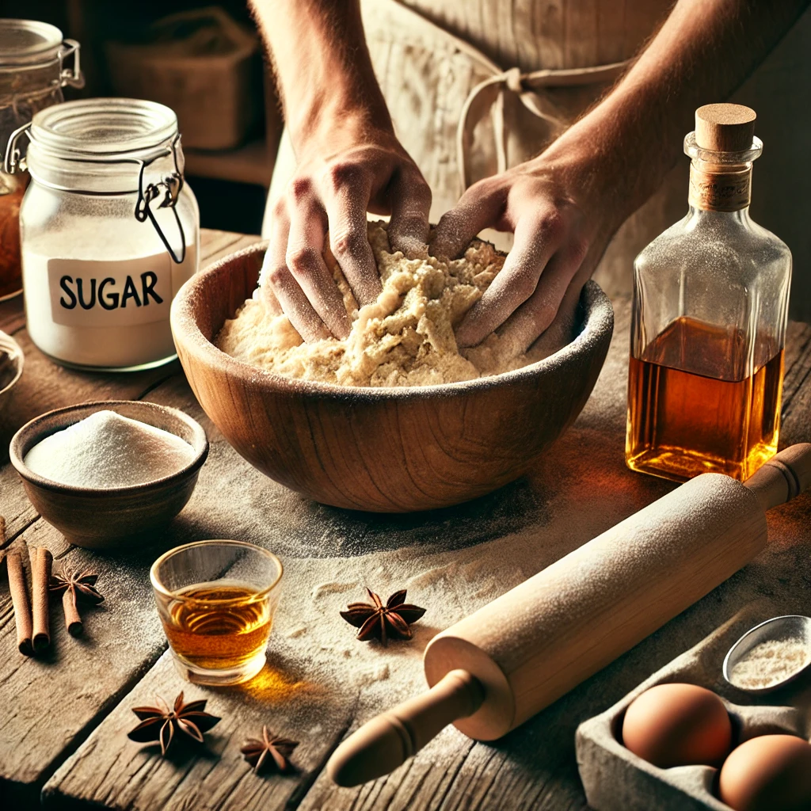
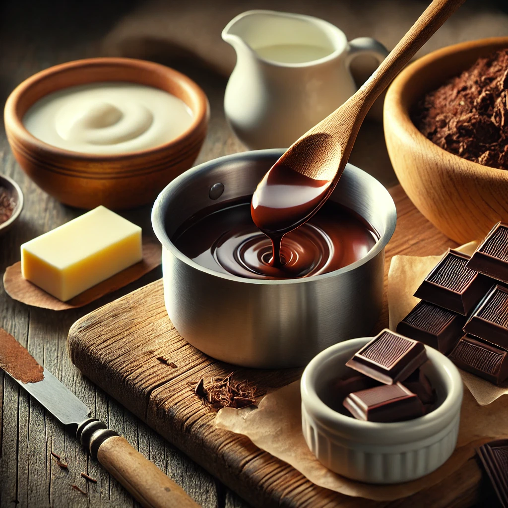
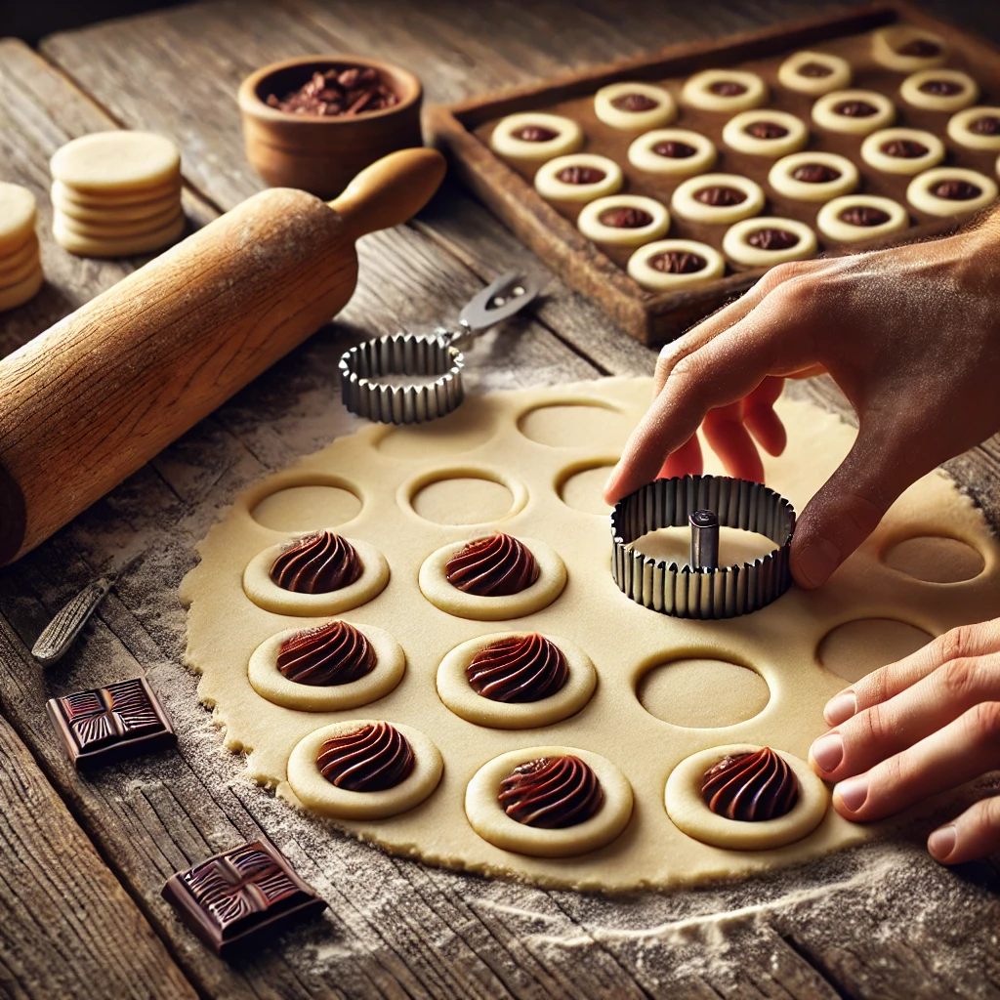
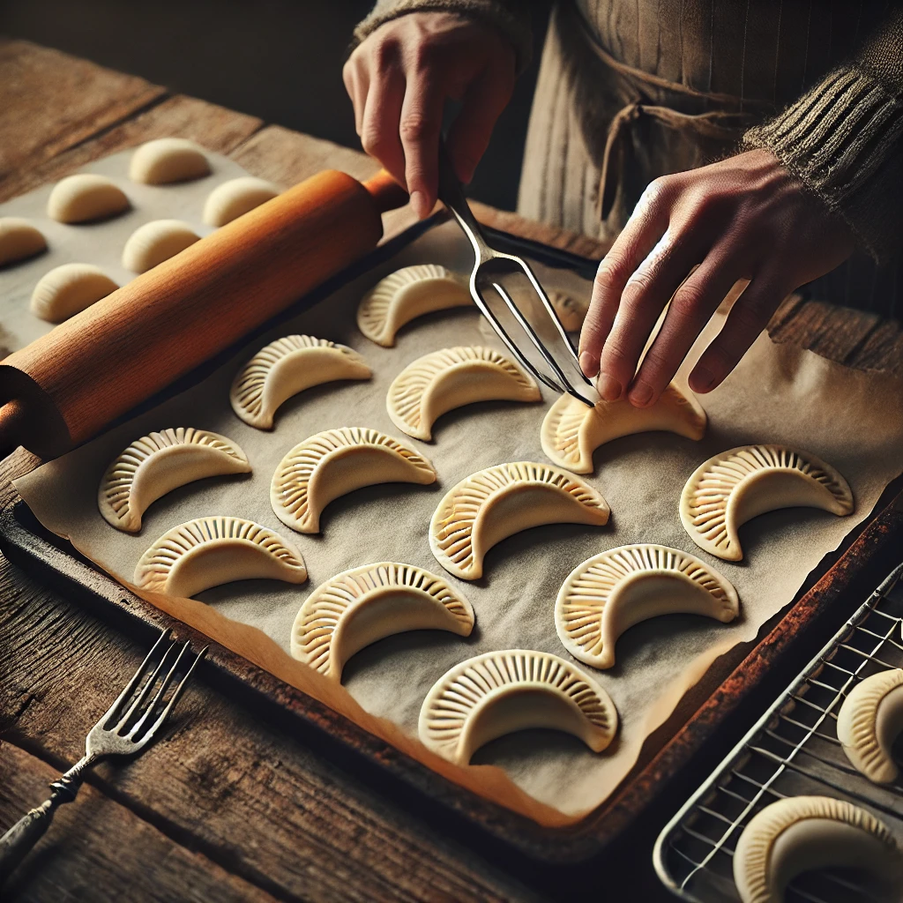
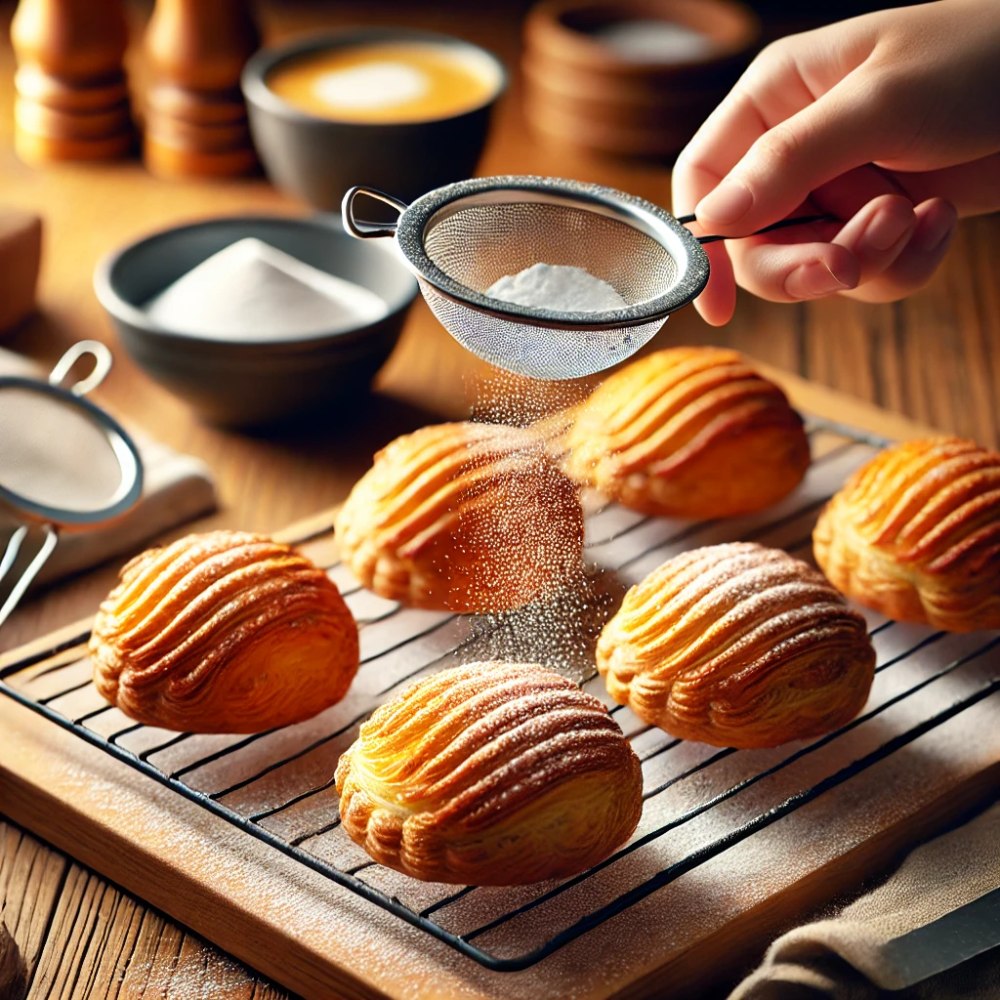

Receta de Pastisset de Chocolate
Los pastissets de chocolate son una deliciosa versión de este dulce tradicional del sur de Cataluña y la Comunidad Valenciana. Con su masa crujiente y su relleno de chocolate fundente, combinan la esencia de la repostería artesanal con un toque irresistible para los amantes del cacao.
Ingredientes
Para la masa
-
Harina de trigo
300 gr
-
Aceite de oliva suave
75 ml
-
Anís o licor suave
75 ml
-
Azúcar
50 g
-
Sal
1 pizca
Para el relleno
-
Chocolate negro
100 g
-
Nata líquida para montar
50 ml
-
Mantequilla
1 cucharada
-
Esencia de vainilla
1 cucharadita
Para decorar
-
Huevo batido para dar brillo
1 unidad
Preparación
-
Prepara la masa
- En un bol grande, mezcla la harina, el azúcar y la pizca de sal.
- Añade el aceite de oliva y el anís poco a poco, mezclando con una espátula o con las manos hasta obtener una masa homogénea.
- Amasa durante unos minutos hasta que la masa esté lisa y manejable.
- Forma una bola, cúbrela con film transparente y deja reposar 30 minutos a temperatura ambiente.
-
Prepara el relleno de chocolate
- En un bol grande, mezcla la harina, el azúcar y la pizca de sal.
- Añade el aceite de oliva y el anís poco a poco, mezclando con una espátula o con las manos hasta obtener una masa homogénea.
- Amasa durante unos minutos hasta que la masa esté lisa y manejable.
- Forma una bola, cúbrela con film transparente y deja reposar 30 minutos a temperatura ambiente.
-
Forma los pastisset
- Enharina ligeramente una superficie y estira la masa con un rodillo hasta que tenga 2-3 mm de grosor.
- Con un cortador o un vaso grande, corta círculos de masa de aproximadamente 10 cm de diámetro.
- Coloca una cucharadita del relleno de chocolate en el centro de cada círculo.
-
Cierra y hornea
- Dobla la masa sobre sí misma, formando una media luna.
- Presiona los bordes con los dedos o un tenedor para sellarlos bien.
- Pincela la superficie con huevo batido para dar brillo.
- Coloca los pastissets en una bandeja con papel de horno y hornea a 180°C durante 15-18 minutos, hasta que estén dorados.
-
Decora y sirve
- Saca los pastissets del horno y deja enfriar sobre una rejilla.
- Espolvorea con azúcar glas antes de servir (opcional).
- ¡Disfruta de tus pastissets de chocolate con un buen café o té!